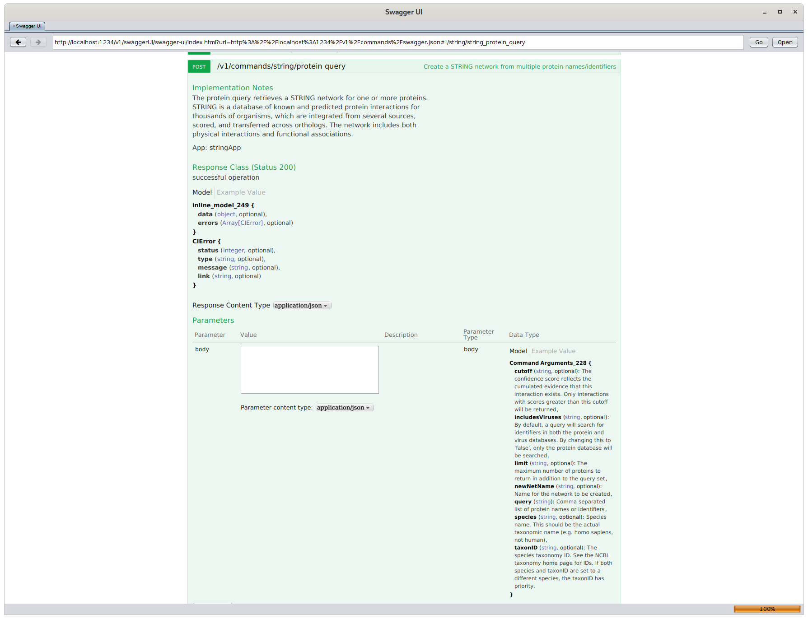

Introduction to Cytoscape: Automation
https://cytoscape.github.io/cytoscape-tutorials/presentations/intro-automation-2021-ismb.html
John "Scooter" Morris
ISMB/ECCB 2021 Tutorial: Reproducible omics data analysis workflows
July 22-23 2021
Goals and Motivations
- Command programmatic control over Cytoscape
- Integrate Cytoscape into your bioinformatics pipelines
- Publish, share and export networks online
Introductions
- Executive director, Resource for Biocomputing, Visualization, and Informatics
- Roving Engineer, National Resource for Network Biology
- Cytoscape team since 2006
- Author of over two dozen Cytoscape apps
Apps and Automation
- Many Cytoscape apps support interaction with R and Python through CyREST.
- You can use the commandsHelp function to get help, but results are somewhat terse and not necessarily as informative as you might want
- A (possibly) easier way exists....
Swagger
In Cytoscape, go to:
Help→Automation→CyREST Command API

Swagger
- Swagger gives you:
- all namespaces and commands
- more detailed documentation of both commands and arguments
- the ability to test commands
- the ability to examine results
App Automation Workflow
- Prototype: try workflow (or part of workflow) using GUI
- Remember the options and arguments you used
- Determine commands: use Swagger to determine the commands and arguments you want
- Automate: implement in R or python, using commandsRun()
Wrap-up
Questions and Discussion